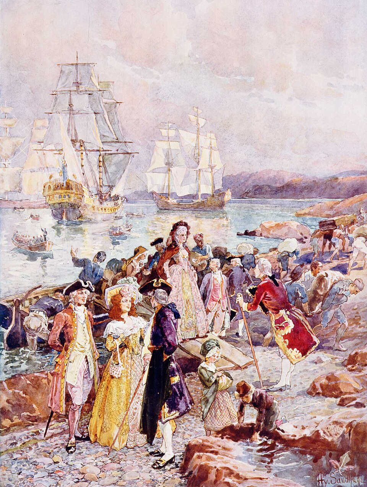

Dys version
This is the same sequence, in shorter steps. The key words are in bold. You can listen to each text.
The big question: Has Canada kept its promise of welcome, and what have newcomers and their host country given each other?
- What is an immigrant?
- Name one country where many people move to.
Answer key
- A person who arrives to live in a new country.
- For example Canada.
S1 · Why Leave?
People leave because of push factors (war, poverty, loss of land) and come because of pull factors (jobs, safety, family). In 2021, 23.0% of people in Canada were immigrants: almost one in four.
Answer
Push: war, poverty, loss of land. Pull: jobs, safety, family.
S2 · Black Loyalists
More than 3,500 Black Loyalists came to the Maritimes in the 1780s. They were promised land. The promises were broken. In 1792, 1,196 people sailed to Sierra Leone.
Answer
land
S3 · The Last Best West
Clifford Sifton wanted farmers for the Prairies. He wrote about “a stalwart peasant in a sheep-skin coat”. He chose some newcomers and refused others.
Answer
Farmers with big families.
S4 · Closed Doors
From 1885, Chinese newcomers paid a Head Tax ($500 in 1903). In 1914, the Komagata Maru came with 376 passengers; only about twenty could land. Canada apologised in 2006 and 2016.
Answer
It apologised.
S5 · Pier 21
Pier 21 in Halifax was open from 1928 to 1971. Nearly one million newcomers arrived there: immigrants, refugees and war brides.
Answer
Women who married Canadian soldiers during the war.
S6 · No Official Culture
In 1971, Pierre Trudeau said: “there are two official languages, there is no official culture”. This is multiculturalism.
Answer
Two: English and French.
S7 · Refugees Today
Canadian citizens can sponsor refugees. In 1986, the “People of Canada” received the Nansen Medal. For 2027, Canada plans to admit 380,000 permanent residents.
Answer
The People of Canada.
Final task in steps
This painting shows…
In (year), Canada welcomed…
But in (year), Canada refused…
I think that Canada…
Expanding your vocabulary
| Word | Meaning | Example |
|---|---|---|
| immigrant | a person who arrives to live in a new country | Raphael was an immigrant. |
| welcome | to receive someone kindly | Canada welcomed refugees. |
| to refuse | to say no | Canada refused the passengers. |
| a promise | something you say you will do | They were promised land. |
| an apology | a formal sorry | Canada made an apology in 2016. |
- Learn the five words above.
- Prepare your final task with the four steps.